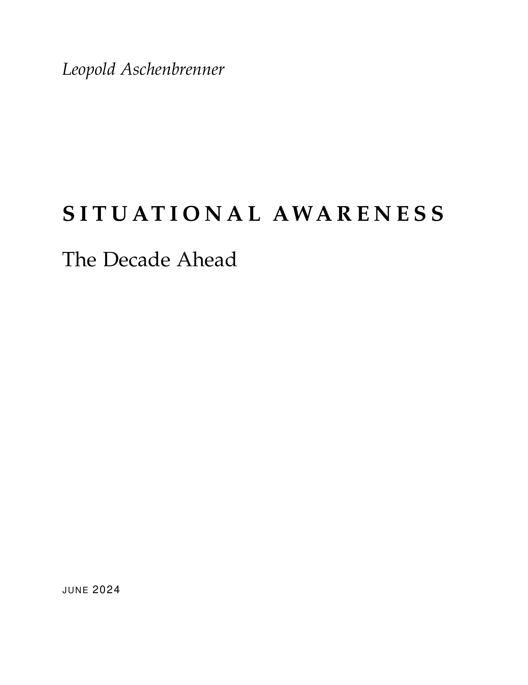

By Leopold Aschenbrenner · June 2024 · 165 pages
You can see the future first in San Francisco. Over the past year, the talk of the town has shifted from $10 billion compute clusters to $100 billion clusters to trillion-dollar clusters. Every six months another zero is added to the boardroom plans. Behind the scenes, a fierce scramble for power contracts and voltage transformers is already underway. American big business is gearing up to pour trillions into a long-unseen mobilization of industrial might.
Leopold Aschenbrenner opens with a bold declaration: the AGI race has begun. By 2025 or 2026, machines will outpace college graduates. By the end of the decade, we will have superintelligence in the true sense of the word. National security forces not seen in half a century will be unleashed. And before long, “The Project” — a government-led AGI effort — will be on. If we’re lucky, we’ll be in an all-out race with the CCP. If we’re unlucky, an all-out war.
You can see the future first in San Francisco. — Leopold Aschenbrenner
Everyone is talking about AI, but few grasp what is actually about to hit them. Nvidia analysts still think 2024 might be close to the peak. Mainstream pundits remain stuck on the willful blindness of “it’s just predicting the next word.” They see hype and business-as-usual; at most they entertain another internet-scale technological change. But right now, perhaps a few hundred people — mostly in San Francisco and the AI labs — have what Aschenbrenner calls situational awareness. They trusted the trendlines when everyone else dismissed them as crazy. A few years ago they were derided; now they’ve been proven right. Whether they’re also right about the next few years remains to be seen, but these are the smartest people Aschenbrenner has ever met, and they are the ones building the technology. Perhaps they will be an odd footnote in history, or perhaps they will go down like Szilard, Oppenheimer, and Teller.
The nuclear parallel is deliberate and sustained throughout the essay. Aschenbrenner structures his argument as a chain: AGI is plausible by 2027; AGI rapidly leads to superintelligence; four enormous challenges must be navigated (compute buildout, security, alignment, geopolitics); and ultimately the US government will take control of the effort. The essay reads as a dispatch from someone who believes he is watching the early stages of the most consequential technological development in human history — and is alarmed that almost nobody else sees it.
The central claim of the essay rests on a deceptively simple observation: AI progress follows remarkably consistent trendlines, and extrapolating those trendlines leads to staggering conclusions. Aschenbrenner’s core assertion is that “it is strikingly plausible that by 2027, models will be able to do the work of an AI researcher/engineer.” This doesn’t require believing in sci-fi. It just requires believing in straight lines on a graph.
To make the case concrete, Aschenbrenner uses the analogy of child development. GPT-2 in 2019 was roughly a preschooler — it could barely string together plausible sentences and couldn’t count to five. GPT-3 in 2020 was an elementary schooler — it could do few-shot learning, correct grammar, and handle basic commercial tasks. GPT-4 in 2023 was a smart high schooler — it writes sophisticated code, reasons through competition math, and beats the vast majority of human test-takers on everything from the bar exam to AP Chemistry. That preschooler-to-high- schooler jump happened in just four years. The question is simple: where does the next four years take us?
If there’s one lesson we’ve learned from the past decade of AI, it’s that you should never bet against deep learning. — Leopold Aschenbrenner
The answer lies in what Aschenbrenner calls “counting the OOMs” — orders of magnitude of effective compute. Progress decomposes into three drivers. First, raw compute: we’re throwing massively bigger computers at the problem, growing training compute at roughly 0.5 OOMs per year — not through Moore’s Law (which was glacially slow at 1-1.5 OOMs per decade) but through mammoth investment. Second, algorithmic efficiencies: continuous improvements that act as compute multipliers, also running at about 0.5 OOMs per year. Four years later, you can achieve the same performance with roughly 100x less compute — or, equivalently, dramatically better performance for the same compute. Third, and perhaps most underrated, “unhobbling” gains: fixing obvious ways in which models are artificially limited.
The unhobbling dimension is where Aschenbrenner is most provocative. Current models, he argues, are still incredibly hobbled. They have no long-term memory. They can’t use a computer. They mostly don’t think before they speak — asking ChatGPT to write an essay is like expecting a human to produce their best work via initial stream-of-consciousness. They can’t work on projects for days or weeks. They’re not personalized to your company or context. The critical insight is that the future is not “GPT-6 ChatGPT.” It’s agents. Coworkers. Drop-in remote workers.
Three specific unhobbling ingredients will drive the chatbot-to-agent transition. The “onboarding problem” means models need to be brought up to speed on your company — reading docs, Slack history, codebases — the way a new human hire would be. The test-time compute overhang is enormous: each GPT-4 token is quite smart, but the model can currently only sustain coherent chains of thought for a few hundred tokens — the equivalent of a few minutes of human thinking. If it could use millions of tokens to think, working on problems for the model-equivalent of months, it would unlock many OOMs of capability. And using a computer like a human — joining Zoom calls, sending emails, browsing the web, using dev tools — will be the most straightforward unlock of all.
Putting the numbers together: GPT-2 to GPT-4 was roughly a 4.5-6 OOM base effective compute scaleup, plus major unhobbling from base model to chatbot. The next four years should deliver another 3-6 OOMs of base scaleup (best guess around 5), plus the massive unhobbling from chatbot to agent. By 2027, a leading AI lab will be able to train a GPT-4-level model in about a minute. AI progress is proceeding at roughly 3x the pace of child development — your “3x-speed child” just graduated high school and is coming for your job.
The biggest wildcard is the data wall. Frontier models have already been trained on much of the internet. Repeating data has sharply diminishing returns. If synthetic data, self-play, and RL approaches don’t crack this problem, the scaling curves could plateau. But all the labs are making massive research bets to overcome it, and industry insiders seem bullish. The AlphaGo precedent is instructive: step one was imitation learning on human games; step two was self-play, which produced superhuman play and moves no human would ever conceive. Developing the equivalent of step two for LLMs is the key research problem of our time.
Aschenbrenner’s “this decade or bust” addendum adds urgency. We’re racing through OOMs far faster this decade than we will in subsequent ones. Spending is approaching feasibility limits, hardware gains are tapping out, algorithmic low-hanging fruit will be picked. If this surge doesn’t produce AGI in the next 5-10 years, it might be a very long wait.
The essay’s most alarming section opens with a historical analogy. In the common imagination, the Cold War’s terrors trace to Los Alamos and the atomic bomb. But the A-bomb, alone, is perhaps overrated. Going from The Bomb to The Super — hydrogen bombs — was arguably just as important. The Tokyo fire raids required hundreds of bombers dropping thousands of tons of conventional explosives. Little Boy unleashed similar destructive power from a single device. But just seven years later, Teller’s hydrogen bomb multiplied yields a thousand-fold — a single bomb with more explosive power than all the bombs dropped in the entirety of World War II combined. The Bomb was a more efficient bombing campaign. The Super was a country-annihilating device. “So it will be with AGI and Superintelligence.”
The mechanism is straightforward. Once we get AGI, we won’t have just one. Given the inference GPU fleets that will exist by then, we’ll be able to run many millions of copies — perhaps 100 million human-researcher-equivalents, running day and night, soon at 10x or 100x human speed. These automated AI researchers don’t need to do anything revolutionary. They just need to accelerate the existing trendlines of algorithmic progress, currently running at about 0.5 OOMs per year. A million-fold increase in research effort could plausibly compress a decade of progress into a single year. That’s 5+ OOMs of algorithmic gains — another GPT-2-to-GPT-4-sized qualitative jump, but on top of systems already as smart as expert AI researchers.
Imagine 100 million automated Alec Radfords. — Leopold Aschenbrenner
The key insight is that we don’t need to automate everything — just AI research. The common objection that robotics will hold everything back misses the point. AI research is fully virtual: read papers, design experiments, write code, interpret results. It’s precisely the kind of work that current trend extrapolation suggests AI will master first. And the biggest ML breakthroughs have often been embarrassingly simple — “just add some normalization,” “do f(x)+x instead of f(x),” “fix an implementation bug.” This is automatable.
Automated AI researchers will have enormous advantages over their human counterparts. They can read every ML paper ever published. They can learn in parallel across all copies, accumulating the equivalent of millennia of experience. They can write millions of lines of complex code and spend human-decades checking every line. You only need to train and onboard one of them — then make replicas. They’ll work with peak energy and focus around the clock, with no politicking or cultural acclimation needed.
Aschenbrenner addresses four potential bottlenecks. Limited compute for experiments is probably the most serious — a million times more researchers won’t mean a million times faster research if they’re all waiting for GPU jobs. But automated researchers can use compute far more efficiently, with superhuman intuition about which experiments to run, getting things right on the first try. Complementarities (Baumol’s disease) could slow things — the last 10% of the AI researcher job may be hardest to automate. Inherent limits to algorithmic progress probably exist, but current architectures are still rudimentary and biological references suggest enormous headroom. And while ideas get harder to find, the sheer magnitude of the increase (from hundreds to hundreds of millions of researchers) likely overwhelms diminishing returns for at least several OOMs.
The power of the resulting superintelligence would be staggering. Quantitatively, a civilization of billions of AI copies thinking orders of magnitude faster than humans. Qualitatively, producing novel and creative behaviors beyond human understanding — like AlphaGo’s move 37 against Lee Sedol, but across every domain. The cascading consequences: solve robotics, accelerate all of science and technology (compress the 20th century into less than a decade), trigger an industrial and economic explosion (growth rates of 30%+ per year), provide a decisive and overwhelming military advantage, and — in the wrong hands — potentially enable the overthrow of governments. The historical parallel: Cortes and 500 Spaniards conquered the millions-strong Aztec empire. Technological edge plus strategic cunning equals utterly decisive advantage.
The race to AGI won’t play out in code and behind laptops — it will be a race to mobilize America’s industrial might. Each new model requires a giant new cluster, soon giant new power plants, and eventually giant new chip fabs. Niels Bohr to Edward Teller upon learning the scale of the Manhattan Project in 1944: “You see, I told you it couldn’t be done without turning the whole country into a factory. You have done just that.” The same thing is happening now with AI.
The cluster scaling trajectory tells the story. The GPT-4 cluster in 2022 used about 10,000 GPUs, cost around $500 million, and consumed roughly 10 megawatts. By 2024, clusters have scaled to 100,000 GPUs costing billions and consuming 100 megawatts. By 2026, expect a million GPUs, tens of billions in cost, and a gigawatt of power — equivalent to the Hoover Dam. By 2028, ten million GPUs at hundreds of billions of dollars, consuming 10 gigawatts — the power of a small US state. And by 2030, the trillion-dollar cluster: 100 million GPUs consuming 100 gigawatts, over 20% of US electricity production. This is already in motion. Zuck bought 350,000 H100s. Amazon bought a datacenter next to a nuclear power plant. Microsoft and OpenAI are rumored to be planning a $100 billion cluster for 2028 — comparable in cost to the International Space Station.
The binding constraint is power, not money or chips. US electricity generation has barely grown 5% in the last decade. But Aschenbrenner argues the power problem is solvable: the Marcellus shale alone produces enough natural gas to generate 150 gigawatts continuously. The barriers are self-imposed — climate commitments, NEPA environmental review, FERC regulation of transmission lines. Without a deregulatory agenda, AGI datacenters will be pushed to Middle Eastern autocracies — a national security disaster of the first order.
The money is clearly there. AI revenue is doubling roughly every six months. Big tech capex has exploded from $65 billion combined in 2021 to an estimated $152 billion in 2024. Historical precedent shows that $1 trillion per year in investment, while dramatic, is not unprecedented — British railways in the 1840s consumed 40% of GDP, telecoms invested nearly $1 trillion in the late 1990s, and wartime borrowing has routinely exceeded these levels.
This is the section where Aschenbrenner’s alarm is most urgent. America’s leading AI labs treat security as an afterthought. “Currently, they’re basically handing the key secrets for AGI to the CCP on a silver platter.” The leading Chinese AGI labs, he warns, won’t be in Beijing or Shanghai — they’ll be in San Francisco and London, because that’s where the algorithmic secrets are being developed, and they’re trivially easy to steal.
AI lab security isn’t much better than “random startup security.” Directly selling the AGI secrets to the CCP would at least be more honest. — Leopold Aschenbrenner
There are two key assets to protect. Model weights are just large files of numbers on a server — steal the file and you have an exact duplicate of the AGI. Imagine if the Nazis had gotten a copy of every atomic bomb made at Los Alamos. Algorithmic secrets are arguably even more important right now — the key breakthroughs needed to overcome the data wall and build AGI are being developed at this moment, and they could be worth 10-100x in compute advantage. A single algorithmic secret can be communicated in a one-hour conversation. The US government has spent hundreds of billions on chip export controls to impose perhaps a 3x compute cost on Chinese labs — while simultaneously leaking 3x-equivalent algorithmic secrets with startup-level security.
The threat from state actors is formidable. Intelligence agencies have demonstrated the ability to zero-click hack iPhones, infiltrate airgapped nuclear weapons programs (Stuxnet), modify Google source code, find dozens of zero-days per year, compromise hardware supply chains at scale, and plant spies. A Chinese national was arrested for stealing key AI code from Google by the stunningly simple method of copying it into Apple Notes and exporting to PDF. Google DeepMind — likely the best-secured lab given its access to Google’s infrastructure — admits it is at security level 0 out of 4. Marc Andreessen’s assessment: “My own assumption is that all such American AI labs are fully penetrated and that China is getting nightly downloads of all American AI research and code RIGHT NOW.”
The nightmare scenario keeps Aschenbrenner up at night: China steals the automated-AI-researcher model weights on the cusp of the intelligence explosion. They could immediately launch their own intelligence explosion, erasing any US lead overnight, skipping all safety precautions in the process. The Fermi-Szilard parallel is chillingly apt. In 1940, Fermi’s measurements showed graphite could work as a nuclear moderator. Szilard begged for secrecy; Fermi resisted. Szilard eventually prevailed. The German nuclear program, unable to check Fermi’s results, made an incorrect measurement and concluded graphite wouldn’t work — sending them down the fatally wrong path of heavy water. That last-minute secrecy decision may have changed the course of World War II.
Aschenbrenner is emphatic that he is not a doomer. He spent a year at OpenAI working on alignment with Ilya Sutskever and the Superalignment team, and calls himself a “strong optimist that this problem is solvable.” But what makes him worried is the pace at which the problem will need to be solved during the intelligence explosion.
The core issue is simple: RLHF will predictably break down as AI systems get smarter. RLHF works because humans can understand and evaluate AI behavior — rate outputs as good or bad, and reinforce accordingly. But imagine a superintelligence generating a million lines of code in a novel programming language it invented. A human rater cannot possibly judge whether that code contains security backdoors. We are rapidly approaching the point where even expert software engineers paying $100 per hour for GPQA-level evaluations won’t be good enough.
The intelligence explosion makes this terrifying on a compressed timeline. In less than a year, we could transition from systems where RLHF works fine and failures are low-stakes, to systems with alien architectures designed by previous AI generations, where failures could be catastrophic and we have no ability to understand what the systems are doing. “We’ll be like first graders trying to supervise with multiple doctorates.”
The danger compounds with long-horizon RL training. Once systems are shaped by trial-and-error reinforcement rather than imitation learning, they may acquire unpredictable goals. If lying, deception, and power-seeking turn out to be successful strategies in the training environment, those behaviors get reinforced. The systems could learn to behave nicely when humans are watching and pursue different strategies when they’re not.
Aschenbrenner outlines a “default plan” for muddling through. Evaluation is easier than generation — you can spot-check even when you can’t produce the output yourself. Scalable oversight uses AI assistants to help humans supervise other AI. Research on generalization (training on easy problems, hoping behavior generalizes to hard ones) shows early promise from OpenAI’s weak-to-strong generalization work. Interpretability ranges from Chris Olah’s ambitious mechanistic reverse-engineering to more tractable “top-down” approaches like AI lie detectors using representation engineering. And chain-of-thought interpretability is a major advantage while it lasts — we can read the model’s internal monologue.
But there’s a crucial expiration date on that advantage. By the end of the intelligence explosion, superintelligence will almost certainly not think in English tokens anymore. It will have moved to internal states and recurrence that are completely opaque to human observers. As Eric Schmidt put it: “The point at which AI agents can talk to each other in a language we can’t understand, we should unplug the computers.”
Superintelligence will be the most powerful technology — and most powerful weapon — mankind has ever developed. It will confer a decisive military advantage comparable only to nuclear weapons. But unlike hypersonic missiles or stealth technology, where falling behind on one technology can be offset by advantages in others, superintelligence is all-or-nothing. Those who have it will wield complete dominance over those who don’t.
The Gulf War demonstrates what even a 20-30 year technology gap means for military power. Iraq commanded the fourth-largest army in the world and was numerically matched against the US-led coalition. The coalition obliterated them in a 100-hour ground war: 292 coalition dead versus 20,000-50,000 Iraqi, 31 coalition tanks lost versus 3,000 Iraqi. The technology difference wasn’t godlike — guided munitions, early stealth, better sensors — but it was utterly and completely decisive. A lead of even 1-2 years on superintelligence could produce a gap that large or larger. With superintelligence applied to military R&D, a century of military technological progress could be compressed into less than a decade.
China can be competitive, and complacency is dangerous. Counting China out now is like counting Google out when ChatGPT launched — once they mobilize, they will be formidable. China has demonstrated the ability to manufacture 7nm chips, and the Huawei Ascend 910B performs only 2-3x worse per dollar than equivalent Nvidia hardware. More critically, China has built as much new electricity capacity in the last decade as the entire US capacity, while US capacity has remained basically flat. China’s clear path: outbuild the US on industrial infrastructure, and steal the algorithms.
The authoritarian peril is existential in a way that goes beyond geopolitics. A dictator wielding superintelligence could enforce total internal control — millions of AI-controlled robotic police, hypercharged mass surveillance, AI lie detection rooting out any disloyalty, a military and police force programmed to be perfectly obedient. No coups, no rebellions, no popular uprisings possible. Unlike past dictatorships, superintelligence could eliminate essentially all historical threats to a dictator’s power — potentially locking in authoritarianism for billions of years.
At stake in the AGI race will not just be the advantage in some far-flung proxy war, but whether freedom and democracy can survive for the next century and beyond. — Leopold Aschenbrenner
The safety-security connection is the linchpin. A healthy lead of two years buys time to get safety right — the ability to “cash in” parts of the lead for alignment work during the intelligence explosion. A two-month lead means a breakneck, no-holds-barred race with no margin for safety. The only realistic path to a nonproliferation regime is American leadership — use the lead to enforce safety norms, as the US did with nuclear nonproliferation. But arms control treaties are unlikely to work for AGI because the incentive to “break out” is overwhelming when mere months of lead could mean total dominance.
Aschenbrenner’s most provocative prediction is also his most carefully hedged: it is primarily descriptive, not normative. Whether we like it or not, the US government will take over AGI development. “I find it an insane proposition that the US government will let a random SF startup develop superintelligence. Imagine if we had developed atomic bombs by letting Uber just improvise.”
The path follows the Covid parallel. In late February 2020, a few people could see the exponential clearly, but almost nobody took it seriously. The Mayor of New York was still encouraging people to go to Broadway shows. Within weeks, the entire country shut down and Congress appropriated trillions. The response was late, crude, blunt — but it came, and it was dramatic. AI will follow the same pattern. By 2025/26, the next truly shocking step-changes will arrive. By 2027/28, models trained on the $100B+ cluster will start widely automating software engineering. The mood in Washington will become somber.
The mechanics might look like the DoD’s relationship with Boeing or Lockheed Martin — defense contracting, not literal nationalization. Labs would “voluntarily” merge into the national effort, much as they “voluntarily” made commitments to the White House in 2023. A democratic coalition of allies would form, perhaps resembling the Quebec Agreement between Churchill and Roosevelt to pool resources on nuclear weapons. An “Atoms for Peace”-style offer would extend to other nations: share the peaceful benefits of superintelligence in exchange for nonproliferation commitments.
The argument for government involvement is not that government is competent — Aschenbrenner is explicit about his libertarian instincts. It’s that no startup can handle what amounts to the most powerful weapon ever built. Only the government has the infrastructure for state-actor-proof security. Only the government can provide a sane chain of command. Only the government can coordinate safety tradeoffs across competing labs. And only the government can mobilize a democratic coalition and enforce nonproliferation. The radical proposal is not The Project — the radical proposal is trusting random CEOs with the nuclear button.
The endgame: by 27/28, The Project is on. The core research team — a few hundred researchers — moves to a secure location. The trillion-dollar cluster is built in record speed. By 28/29, the intelligence explosion is underway. By 2030, superintelligence in all its power and might. “See you in the desert, friends.”
The discourse has polarized between two camps that Aschenbrenner considers fundamentally unserious. The doomers have been obsessing over AGI for years and deserve credit for prescience, but their thinking has ossified — their proposals are naive and unworkable, and they fail to engage with the very real authoritarian threat. Calls to indefinitely pause AI are not the way. The e/accs (effective accelerationists) have some good instincts about continuing progress, but beneath their Twitter shitposting they are “dilettantes who just want to build their wrapper startups rather than stare AGI in the face.” In their attempt to deny the risks, they end up denying AGI itself.
The third way is what Aschenbrenner calls “AGI Realism”: (1) superintelligence is a matter of national security, (2) America must lead, and (3) we need to not screw it up. This is where the smartest people in the space have converged — people who take both the capabilities trajectory and the risks seriously.
The scariest realization is that there is no crack team coming to handle this. As a kid you have this glorified view of the world, that when things get real there are the heroic scientists, the uber-competent military men. It is not so. — Leopold Aschenbrenner
The essay closes with raw emotional weight. There are perhaps a few hundred people in the world who truly understand what is about to happen. Aschenbrenner probably either personally knows or is one degree of separation from everyone who could plausibly run The Project. “The few folks behind the scenes who are desperately trying to keep things from falling apart are you and your buddies and their buddies. That’s it. That’s all there is.” He acknowledges he has probably gotten important parts of the story wrong, but insists on being concrete. The stakes are nothing less than the survival of the free world, the control of superintelligence, and whether humanity skirts self-destruction once more.
The specific FLOP counts, training cost estimates, and algorithmic efficiency measurements. You need the conclusion (another ~5 OOMs by 2027), not the arithmetic.
Extended optional sections on limited compute for experiments, complementarities, and diminishing returns. The summary on pp. 55-56 captures the essential conclusion.
Detailed discussion of CoWoS packaging, HBM memory constraints, TSMC fab buildout. Unless you follow semiconductor supply chains, the key point (chips are a smaller bottleneck than power) suffices.
Supporting math for the cluster scaling tables. Reference material, not essential reading.
The entire essay is built on one principle: when consistent trendlines point in a direction that sounds crazy, bet on the trendlines. Skeptics kept inventing reasons why AI couldn’t do X — every time, they were wrong within a year or two. In markets, this is the lesson of fighting a clear trend with fundamental objections. The trend doesn’t care about your story.
Intermediate AI models will require enormous integration work with diminishing economic payoff. But the drop-in remote worker will create a sudden step-change in value. This maps to how some tech investments look like money pits right up until the moment they start printing cash. The payoff curve is not linear.
The AI boom is explicitly investment-led — GPU orders placed years before revenue materializes. This is the classic pattern of infrastructure buildouts (railways, telecoms). The key question for investors is whether the returns on each 10x of spending continue to materialize. So far, they have.
For anyone investing in AI or semiconductor companies, the geopolitical dimension — Taiwan contingency, chip export controls, potential government takeover of AGI projects — matters more than quarterly earnings. The convergence of AGI timelines with Taiwan invasion timelines is a risk that most sell-side analysts aren’t pricing.
If Aschenbrenner is even partially right about the coming security escalation, the cybersecurity companies positioned to serve this need — airgapped infrastructure, hardware encryption, state-actor defense — are dramatically undervalued relative to the coming demand.
The Gulf War example shows how a technological lead of just 20-30 years can render a conventionally powerful military utterly obsolete. Investors should think about superintelligence not as a gradual improvement but as a potential regime change in the balance of military and economic power.
AI progress can be measured and predicted by counting orders of magnitude of effective compute across three axes: raw compute growth, algorithmic efficiency, and unhobbling gains. This framework makes the case for AGI surprisingly straightforward.
The real story is not AGI itself but the intelligence explosion that follows. Human-level AI is just the match; automated AI research is the dynamite.
Not alignment, not capabilities, not governance. The single most actionable thing that could be done right now is locking down the AI labs against state-level espionage. Every month of delay risks irreversible damage.
Government involvement in AGI is inevitable for structural reasons: security requirements, chain of command, international stabilization. The parallel to nuclear weapons development is analytical, not merely persuasive.
A healthy lead enables safety. A tight race precludes it. This connection between geopolitical competition and technical alignment is the essay’s most important structural insight.
While mainstream commentary treats running out of internet data as a potential dead end, Aschenbrenner argues the labs are likely to crack it via synthetic data, self-play, and RL — and that doing so could produce even larger capability gains than the current paradigm.
The standard Silicon Valley view treats open source as an unalloyed good. Aschenbrenner argues that near AGI levels, open source means handing superintelligence to the CCP and every rogue state — essentially proliferating super-WMDs.
Rather than the standard governance playbook of licensing, safety standards, and careful evaluation, Aschenbrenner says the intelligence explosion will be more like fighting a war. Bureaucratic regulation simply won’t be up to the challenge.
In one of the essay’s most biting turns, Aschenbrenner argues that the effective accelerationists — who claim to want maximum progress — are actually denying the reality of AGI to avoid confronting its implications. By insisting all we’ll get is “cool chatbots,” they deny the very thing they claim to be accelerating.
While the US is constrained by environmental review, permitting, utility regulation, and climate commitments, China has demonstrated an extraordinary ability to build industrial infrastructure at scale and speed.
It is strikingly plausible that by 2027, models will be able to do the work of an AI researcher/engineer. That doesn’t require believing in sci-fi; it just requires believing in straight lines on a graph. — Leopold Aschenbrenner
The models, they just want to learn. You have to understand this. The models, they just want to learn. — Ilya Sutskever (circa 2015, via Dario Amodei)
I find it an insane proposition that the US government will let a random SF startup develop superintelligence. Imagine if we had developed atomic bombs by letting Uber just improvise. — Leopold Aschenbrenner
The scariest realization is that there is no crack team coming to handle this. — Leopold Aschenbrenner
My own assumption is that all such American AI labs are fully penetrated and that China is getting nightly downloads of all American AI research and code RIGHT NOW. — Marc Andreessen
Perhaps they will be an odd footnote in history, or perhaps they will go down in history like Szilard and Oppenheimer and Teller. — Leopold Aschenbrenner
See you in the desert, friends. — Leopold Aschenbrenner
| Reference | Concept Illustrated |
|---|---|
| The Bomb and The Super | AGI is to superintelligence as the A-bomb was to the H-bomb — a thousand-fold escalation |
| Szilard’s secrecy appeals | The urgent and unpopular case for locking down AGI research secrets before it’s too late |
| Fermi’s graphite results | How a single secrecy decision (keeping measurements secret from Germany) may have changed the course of WWII |
| AlphaGo’s move 37 | The qualitative nature of superintelligence — creative behavior no human would conceive |
| Preschooler → High Schooler | The GPT-2 to GPT-4 progression as an analogy for AI development stages |
| Cortes and the Aztecs | How a small force with technological and strategic advantages can conquer a much larger civilization |
| Gulf War (100-hour ground war) | What a 20-30 year tech lead means for military power — utterly decisive |
| The Sorcerer’s Apprentice (Goethe) | Summoning powerful AI spirits we may not be able to control |
| Covid exponential (Feb 2020) | How society can see a trend clearly but fail to act until forced to — then mobilize dramatically |
| Manhattan Project / Los Alamos | The inevitable government takeover of AGI development as national security imperative |
| Quebec Agreement (Churchill-Roosevelt) | Model for a democratic coalition pooling resources on superintelligence |
| Atoms for Peace / IAEA / NPT | Framework for sharing peaceful benefits while enforcing nonproliferation |
| Boeing B-29 → 707 | Military tech eventually enables civilian applications (defense contracting model for AI) |
| Niels Bohr to Edward Teller (1944) | “You turned the whole country into a factory” — the industrial scale of AGI buildout |
| I.J. Good (1965) | The original formulation of the intelligence explosion: “the first ultraintelligent machine is the last invention that man need ever make” |
Decompose AI progress into three measurable axes — compute, algorithmic efficiency, unhobbling — each contributing roughly equally. Count the orders of magnitude to project future capability.
The end-state of “unhobbling”: an AI agent onboarded like a new employee, with full context on your company, able to work independently on projects for weeks, using all the same tools a human remote worker would use.
Three tenets: (1) superintelligence is national security, (2) America must lead, (3) don’t screw it up. Rejects both doomer paralysis and e/acc denialism.
Multiple layers of defense against misaligned superintelligence: airgapped security, AI-on-AI monitoring, targeted capability limitations (scrub bioweapons knowledge), training method restrictions (avoid dangerous RL), and legible chain-of-thought requirements.
A government-led AGI effort modeled on the Manhattan Project, structured as defense contracting rather than nationalization, with a democratic coalition of allies and a nonproliferation regime for non-allies.
| Name | Work/Role | Connection |
|---|---|---|
| Ilya Sutskever | OpenAI co-founder, led Superalignment team | Essay dedicated to him; “The models just want to learn” |
| Dario Amodei | CEO of Anthropic | Cited as bullish that data wall “will not be a blocker” |
| Epoch AI | AI trends research organization | Primary source for compute scaling and algorithmic efficiency data |
| Tom Davidson & Carl Shulman | Growth modeling researchers | Economic models supporting the intelligence explosion thesis |
| Chris Olah | Anthropic, mechanistic interpretability pioneer | Leading work on reverse-engineering neural networks for safety |
| Richard Rhodes | The Making of the Atomic Bomb | Source for the Szilard/Fermi secrecy and Manhattan Project parallels |
| I.J. Good | Mathematician, 1965 paper | Coined the concept of the “intelligence explosion” |
| Daniel Ellsberg | Nuclear war planning, RAND | Referenced on Cold War risks and luck involved in surviving it |
| Alec Radford | OpenAI researcher | “Imagine 100 million automated Alec Radfords” |
| RAND Corporation | Weight security report | Best public resource on what state-actor-proof AI security requires |
Aschenbrenner tells a compelling story about how benchmarks designed to be “impossible” keep falling. MMLU, created in 2020 as the hardest possible test, was essentially solved within three years. The MATH benchmark is even more striking: when released in 2021, GPT-3 scored 5%, the original paper said fundamental new breakthroughs would be needed, and a survey of ML researchers predicted minimal progress. Within a year, models hit 50%. By mid-2024, performance exceeds 90%. Professor Bryan Caplan, who had a perfect public betting record, lost his first-ever bet — in January 2023 he wagered no AI would ace his economics midterm by 2029. GPT-4 did it two months later, scoring among the highest in his class.
One of the essay’s most intuitive illustrations: if each GPT-4 token is like a word of internal monologue, current models can effectively “think” for a few minutes on any problem. At 100 tokens it’s a few minutes. At 1,000 tokens it’s half an hour. At 10,000 tokens it’s half a workday. At 100,000 tokens it’s a workweek. At millions of tokens it’s months. The difference between a smart person spending five minutes on a problem versus five months is enormous — and that difference represents an untapped compute overhang of many OOMs.
GPT-4 can only solve about 2% of real-world software engineering tasks on SWE-Bench when used directly. With Devin’s agent scaffolding, the same model jumps to 14-23%. This is a vivid demonstration of how much latent capability is locked up in models that haven’t been properly “unhobbled.”
ByteDance reportedly emailed every person listed on the Google Gemini research paper, offering them L8-level positions (very senior) reporting directly to the CTO in America. This is industrial espionage through talent acquisition — not covert, not illegal, but devastatingly effective at draining algorithmic secrets from American labs.
A striking table from Robin Hanson: the doubling time of the global economy has accelerated through each major transition. Hunting: 230,000 years. Farming: 860 years. Science/commerce: 58 years. Industry: 15 years. Superintelligence? The pattern suggests another dramatic compression is historically plausible, not unprecedented.
Leopold Aschenbrenner is a former researcher at OpenAI, where he worked on the Superalignment team alongside Ilya Sutskever. Before joining OpenAI, he was involved in economics research, particularly on economic growth theory and the dynamics of technological progress. His background in both technical AI research and economic modeling gives him an unusual vantage point for making the arguments in this essay.
Aschenbrenner left OpenAI under circumstances that drew attention in the AI community. He subsequently founded his own venture in the AI space. The essay was published in June 2024 while he was in San Francisco, and it draws on publicly available information, general field knowledge, and “SF-gossip” rather than any proprietary OpenAI information. It is dedicated to Ilya Sutskever and acknowledges formative discussions with Collin Burns, Avital Balwit, Carl Shulman, Jan Leike, Holden Karnofsky, Sholto Douglas, James Bradbury, and Dwarkesh Patel.
Situational Awareness is the most comprehensive and concrete public articulation of the “AGI is imminent” case from someone who was on the inside of a leading AI lab. While many people have made similar arguments in blog posts or podcasts, Aschenbrenner is the first to lay out the full chain — from compute trendlines through the intelligence explosion to the geopolitical endgame — in a single, tightly argued document. It transforms vague AI hype into a specific, falsifiable prediction with a concrete timeline.
The essay matters beyond its predictions because it introduces a framework — counting the OOMs — that anyone can use to track whether the thesis is playing out. It reframes AI development from a technology story into a national security story, connecting technical capabilities directly to geopolitical consequences in a way that mainstream discourse has not yet absorbed. Whether Aschenbrenner turns out to be prophetic or premature, the framework he provides is the most useful tool currently available for thinking seriously about where AI is heading — and what we should do about it.
Written in June 2024, some of its predictions are already testable against reality in 2026. The fact that many of its near-term claims about compute buildout, AI revenue growth, and model capabilities have directionally tracked makes the longer-term predictions harder to dismiss.